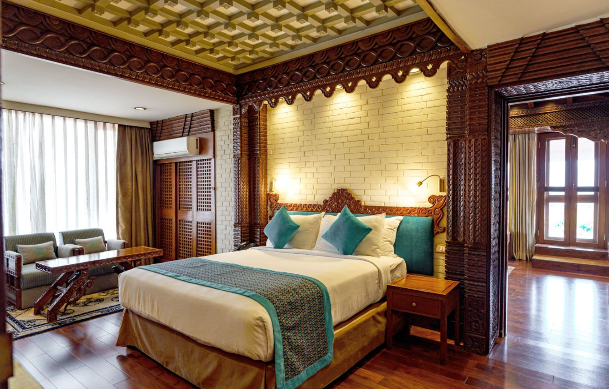

All of the Luxe Lodge's 270 rooms and suites offer the epitome of comfort and convenience. Stylishly decorated with quality fixtures and fittings, art and artefacts, attention to detail and careful thought has been put into every aspect of our accommodation, from the Deluxe Rooms right up to the Presidential Suite.

Indulge in a culinary journey at our fine dining restaurant, where expert chefs curate a tantalizing menu of local and international dishes using the freshest ingredients. Guests can choose to dine indoors or al fresco, soaking in the ambiance of our charming restaurant.
At The Luxe Lodge, guests can enjoy delicious culinary experiences with food served four times a day. Our dining options include:
At The Luxe Lodge, we believe that relaxation and rejuvenation are essential parts of any stay. That's why we are proud to offer a luxurious spa facility, where guests can indulge in a variety of treatments and services designed to promote wellness and relaxation. Our spa features a range of massage therapies, facials, and body treatments, all using natural and organic products. We also offer a variety of relaxation therapies, such as aromatherapy and reflexology, to help guests unwind and recharge. Our team of experienced and professional therapists are dedicated to providing exceptional service and personalized attention, ensuring that each guest leaves feeling refreshed and revitalized. Whether you're looking to relax and unwind or maintain your fitness routine, The Luxe Lodge has everything you need to feel your best.
At The Luxe Lodge, we understand that maintaining a healthy lifestyle is important, even when you're on the road. That's why we are proud to offer a state-of-the-art fitness center, equipped with the latest cardio and strength training equipment. Our fitness center is open 24 hours a day, so guests can work out at a time that is convenient for them. We also offer a variety of fitness classes, such as yoga and Pilates, led by experienced and certified instructors. For those who prefer to exercise outdoors, we have a variety of running and biking trails nearby, as well as a partnership with a local gym for guests who want to try something new. Whether you're a fitness enthusiast or just looking to maintain your routine while traveling, The Luxe Lodge has everything you need to stay active and healthy. Maintain your fitness regime at our state-of-the-art fitness center, equipped with modern cardio and strength training equipment. Whether you prefer a brisk workout or a leisurely session, our fitness facilities cater to all fitness levels.
At The Luxe Lodge, we are committed to providing exceptional service and attention to detail. Our concierge team is available 24 hours a day to assist guests with any requests or needs they may have. Whether you need help with dinner reservations, recommendations for local attractions, or assistance with travel arrangements, our concierge team is here to help. We can also assist with arranging transportation, booking tickets for local events, and providing insider tips and advice on the best things to see and do in the area. Our goal is to make your stay at The Luxe Lodge as seamless and enjoyable as possible, so you can focus on relaxing and enjoying your time with us. Let our concierge team take care of the details, so you can sit back, relax, and enjoy your stay at The Luxe Lodge.Our dedicated concierge team is available 24/7 to assist you with restaurant reservations, transportation arrangements , tour bookings, and any other inquiries or requests you may have during your stay.